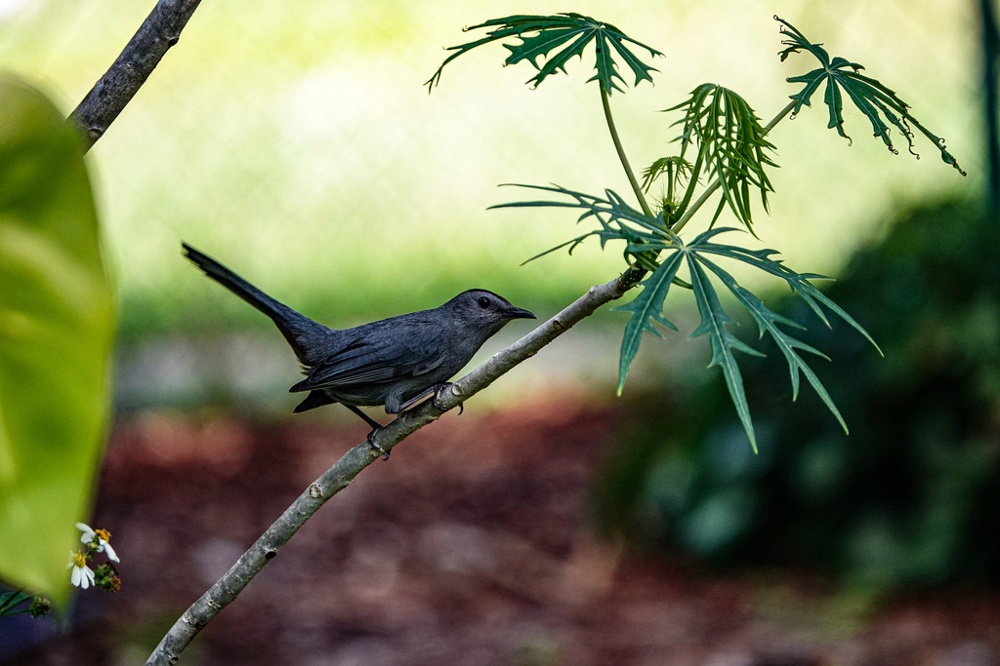

Dumetella carolinensis
Mimidae
📷 Photo by Rob Carr · CC-BY-NC · via iNaturalist · 📅 Mar 31, 2023
Quick Hits
- A sleek, slate-gray bird with a black cap and a rusty patch hidden under the tail — listen for the cat-like mewing call that gives it its name.
- Like its cousin the mockingbird, it is a mimic, stringing together borrowed phrases — but it rarely repeats them, giving its song a rambling, unrepeated quality.
- It skulks in dense shrubs and tangles, more often heard than seen.
- A winter visitor and passage migrant in our area, most likely from fall through spring.
How to Spot It
Color
Uniform slate gray with a black cap and a rusty-red undertail patch.
Shape
Sleek, medium-sized, long-tailed.
Sound
A distinctive cat-like mewing; also a rambling, non-repeating song.
Behavior
Skulks in dense vegetation; flicks tail to reveal rusty patch.
Voice
A nasal, cat-like 'mew' and a long, rambling song of unrepeated phrases.
What to Look For
A plain gray bird skulking in dense shrubs, mewing like a cat. Look for the black cap and, if it flicks its tail, the hidden rusty patch underneath.
What It Eats
Insects and fruit — a mixed diet that shifts toward berries in fall and winter.
Where & When
Where in the park
Listen for the mewing call in dense shrubbery along garden edges and near the ponds.
When to see it
Mainly a winter visitor and migrant in this area, most likely October through April.
Watching It Respectfully
Observe and enjoy.
Photo Credits
- © Rob Carr (CC-BY-NC), via iNaturalist